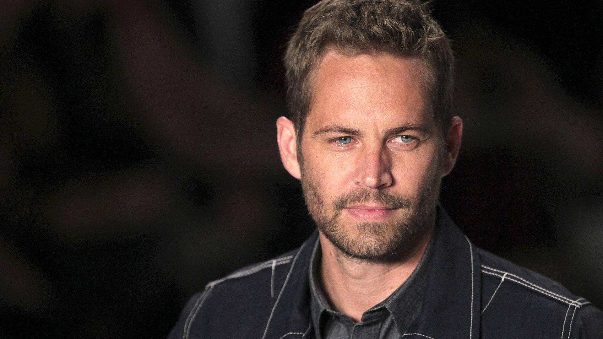

Born: September 12th, 1973
Died: November 30th, 2013
-Paul Walker

2023 - Fast & Furious X (Brian O'Conner)
2019 - I Am Paul Walker (Himself)
2015 - Fast & Furious 7 (Brian O'Conner)
2013 - Brick Mansion - La Fortaleza (Damien Collier)
2013 - Cuenta atrás - Horas desesperadas (Nolan)
2013 - Fast & Furious 6 (Brian O'Conner)
2013 - Pawn Shop Chronicles (Raw Dog)
2012 - Air Racers 3D (Himself)
2012 - Carrera infernal (Michael Woods)
2011 - Fast & Furious 5 (Brian O'Conner)
2010 - Ladrones - Takers (John Rahway)
2009 - Fast & Furious: Aún más rápido (Brian O'Conner)
2008 - Proyecto Lazarus (Ben Garvey)
2007 - Bobby Z (Tim Kearney)
2006 - Banderas de nuestros padres (Hank Hansen)
2006 - La prueba del crimen (Joey Gazelle)
2005 - Bajo cero (Jerry Smith)
2005 - Inmersión letal (Jared Cole)
2004 - Noel (Mike)
2003 - 2 Fast 2 Furious (Brian O'Conner)
2003 - Timeline (Chris Hughes)
2001 - Nunca juegues con extraños (Lewis Thomas)
2001 - The Fast and the Furious (Brian Earl Spilner / Officier Brian O'Conner)
2000 - The Skulls: Sociedad secreta (Caleb Mandrake)
1999 - Alguien como tú (Dean Sampson)
1999 - Sueños Rotos (Jason)
1998 - Juego de campeones (Lance Harbour)
1998 - Pleasantville (Skip Martin)
1998 - Vaya par de locos (Phil Deedle)
1994 - Tammy and the T-Rex (Michael)
1990 - ¿Quién es el jefe? - Temporada 7 Episodio 15 (Michael Haynes)
1987 - Retaliator, programada para matar (Jason)
1986 - El monstruo del armario (Bennett)